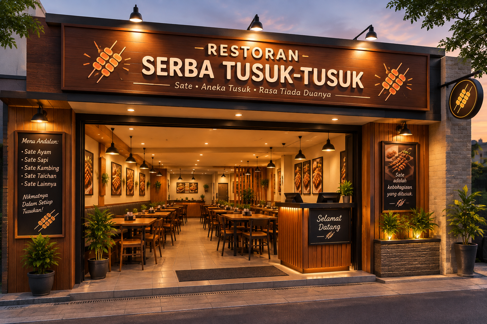

Nama: Restoran Serba Tusuk - tusuk
Jenis Usaha: Kuliner / Restoran
Konsep: Makanan Serba Tusuk
Tahun Berdiri: 2026
Lokasi: Depok, Jawa Barat, Indonesia
Restoran Serba Tusuk - tusuk merupakan usaha kuliner yang menghadirkan berbagai macam makanan dengan konsep serba ditusuk. Restoran ini didirikan pada tahun 2026 dengan tujuan menyediakan makanan yang lezat, praktis, dan terjangkau bagi masyarakat.
Berawal dari ide sederhana untuk menyajikan berbagai jenis sate dalam satu tempat, Restoran Serba Tusuk kemudian berkembang dengan menyediakan pilihan makanan, minuman, dan dessert yang dapat dinikmati oleh berbagai kalangan.
Menjadi restoran pilihan masyarakat dalam menikmati berbagai hidangan serba tusuk yang lezat, berkualitas, terjangkau, dan memberikan pengalaman makan yang nyaman.
Salah satu menu yang menjadi ciri khas restoran adalah Sate Taichan. Menu ini dipilih sebagai salah satu hidangan andalan karena memiliki cita rasa yang sederhana namun tetap menarik bagi pecinta makanan berbahan dasar daging.
Selain Sate Taichan, pelanggan juga dapat menikmati berbagai pilihan sate seperti Sate Ayam Bumbu Kacang, Sate Kambing, Sate Sapi, hingga Sate Lidah Sapi.